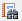
El software SMART consta de una serie de perspectivas y componentes que interactúan entre sí para producir un flujo de trabajo para la gestión de los patrullajes y la información colectada durante los patrullajes. Muchas perspectivas comparten componentes parecidos lo que facilita la familiaridad con toda la aplicación, mientras proporciona funcionalidad única para cada perspectiva.
1.1 Introducción
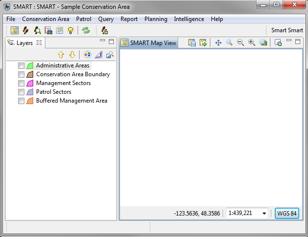
Los componentes de SMART
| Componente SMART | Icono |
| Perspectiva de Mapa | |
| Perspectiva de Patrullaje | |
| Perspectiva de Consulta | |
| Informes |  |
| Planes SMART | |
| Inteligencia SMART |
La perspectiva de mapa es el punto de partida al iniciar una sesión en SMART. En esta ventana se mostrarán las cinco (5) capas administrativas previamente cargadas en la pestaña Capas, que se encuentra al lado izquierdo de la pantalla. Los iconos encima de la lista de capas permite la reordenación, re-estilización y la opción de zoom a las extensiones de las capas. En esta perspectiva, el administrador puede realizar cambios en la cartografía predeterminada del Área de Conservación (consulte Creación de mapas de base).
Nota: Existen ventanas de mapeo en las perspectivas de patrullaje y de búsqueda y la navegación de mapas para estas ventanas son las mismas que la perspectiva de mapa.
| Subir la capa seleccionada en la lista | |
| Bajar la capa seleccionada en la lista | |
| Cambia el estilo de la capa seleccionada | |
| Cambia si la capa seleccionada se debe enfocar o no | |
| Zoom a las capas seleccionadas |
Navegar en la ventana de mapeo de SMART es un proceso simple que sigue muchos de los mismos procedimientos que en otras aplicaciones de SIG. Los usuarios pueden desplazarse por el mapa, acercarse/alejarse en toda la extensión de los archivos espaciales cargados en la ventana de mapeo.
| Guardar un mapa de base | 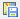 |
| Seleccione un mapa de base | 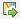 |
| Panóramica | |
| Acercar a área | |
| Alejarse | |
| Acercarse | |
| Zoom a la extensión completa | |
| Añadir una capa al mapa | 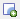 |
Configurando Escala y Proyección de Mapa
En la parte inferior de la ventana de mapeo, los usuarios pueden ajustar manualmente la escala de la visualización y las proyecciones disponibles.
Nota: Las proyecciones adicionales sólo están disponibles después que un administrador ha añadido las proyecciones adicionales a la zona de conservación (vea Manejo de Proyecciones)
Capas espaciales adicionales pueden ser añadidas a la perspectiva de mapeo para añadir contexto a los cinco (5) archivos de límites que se cargan durante la inicialización del Área de Conservación.

Archivos - ESRI Shapefiles, archivos ArcGRID y varios formatos de imagenes son compatibles.
Decoración de Mapa - Flecha de norte, barra de escala, leyenda y una cuadricula son elementos cartográficos adicionales.
Página de Conexión de Área SMART - abre el diálogo para la adición/actualización de los cinco (5) archivos de límites originales.
Servidor de Mapas Web - Agrega una conexión a un Servidor de Mapas Web (WMS).
Servidor de Mapas Web Caché de Bloques - Agrega una conexión con un Servidor de Mapas Web Cache de bloques (WMS-C).
SMART tiene un amplio conjunto de herramientas para crear mapas personalizados con colores y etiquetas definidos por el usuario. El diálogo de Editor de Estilos permite la personalización de muchos de los componentes cartrográficos para capas de punto, línea y polígonos.
Propiedades de estilo
Generales - configura la escala de visualización minima y máxima y cualquier potencial de desplazamiento aplicado a la visualización de la capa.
Límite - establece las características de los bordes del polígono.
Relleno - establece las características internas del polígono.
Etiquetas - establece las características de las etiquetas.
Filtro - Filtros personalizados pueden ser creados para reducir las características no deseadas de las ventanas de mapeo.

Las capas se pueden eliminar seleccionando la capa y haciendo clic-derecho para que aparezca las opciones adicionales que incluyen Eliminar. Las capas también se pueden eliminar al seleccionar la capa y haciendo clic en el botón "Delete" en el teclado.
Las capas individuales se pueden exportar a Shapefiles y toda la ventana de mapeo se puede exportar a un archivo de imagen. La exportación de capas o imágenes de mapa pueden ser accedidas a través de la opción en el menú Archivo - Exportación de Mapa o seleccionando capas y haciendo clic-derecho para acceder a la funcionalidad Exportación de Mapa.

Los mapas de base son una representación cartográfica guardada que se puede aplicar al Área de Conservación entera para dar consistencia a través de las diversas perspectivas. Las capas, los colores y las etiquetas son algunos de los elementos que pueden ser guardados en un mapa de base. Varios mapas de base pueden ser creados por el Administrador, y a estos mapas de base se puede acceder más tarde por el resto de cuentas a nivel de usuario.

Crear y seleccionar un mapa de base
La cartografía de mapas de base se encuentran en la perspectiva de mapa. Después que la cartografía se ha creado, el mapa de base se guarda como un nuevo mapa de base o sobre-escribe un mapa existente.
Después de crear un mapa de base, el administrador puede establecer ese mapa de base para que sea el predeterminado para el Área de Conservación.
Un usuario que no sea administrador puede optar por utilizar un mapa de base alternativo para una sesión abierta usando la opción para seleccionar mapa de base y eligiendo "Usar un mapa predeterminado de sesión".
Manejando mapas de base
Al selecciónar Áreas de Conservación - Manejar mapas de base, un administrador puede establecer un mapa de base como el mapa de defecto para el área de conservación, eliminar un mapa de base ya existente o cambiar/traducir su nombre.

Mapas de base en informes
Mapas integrados en los informes también utilizan mapas de base para establecer la cartografía del objeto mapa. En la pestaña Capas de Mapa, el usuario puede seleccionar el mapa de base que desea utilizar para el mapa en el informe.

La perspectiva de patrullaje es donde se crean los patrullajes y donde sus observaciones asociades se registran. La perspectiva de la patrullaje se divide en tres partes.
Perspectiva de Lista de Patrullajes - La lista de las patrullajes ingresadas en el Área de Conservación.
Capas - Capas de mapeo incluyendo los puntos de patrullaje y los trayectos en la ventana de mapeo.
Ventana de Información de Patrullaje - Esta es la ventana principal donde la información recopilada durante el patrullaje se puede acceder. En la parte inferior de esta ventana habrá:
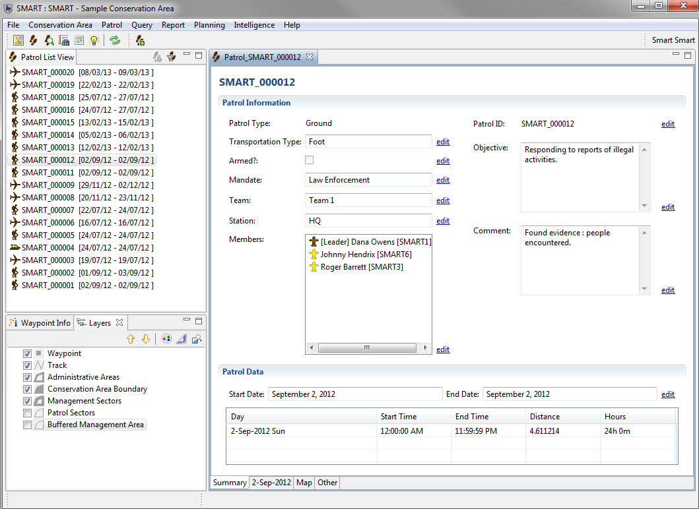
Como parte del proceso de inicialización para una nueva área de conservación, se requiere que el/la administrador(a) configure diversos parámetros de patrullaje. Opciones de Patrullaje permiten que (1) revisiones a un patrullaje sean admisibles durante un período determinado de tiempo y (2) la información adicional esté disponible durante la creación de patrullajes. Este proceso no es un requisito durante la inicialización de la información de patrullaje para el área de conservación.
Registro de Distancia y Dirección: Si se selecciona, los datos de patrullaje tendrán dos columnas adicionales para registrar la distancia y dirección compensadas de las observaciones y sus coordenadas capturadas por el GPS.
Editar opciones: Indica el número de días después de la entrada de datos durante el cual los datos de patrullaje pueden ser editados por cuentas que no sean de administrador. El valor predeterminado de -1 especifica que el patrullaje siempre será editable.
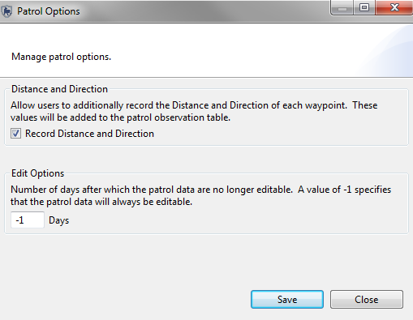
Mandatos de Patrullaje son una lista de mandatos que se asocian a cada patrullaje. Este proceso no es un requisito durante la inicialización de la información de patrullaje para el área de conservación.
Añadir: Añade nuevos mandatos a la lista.
Desactivar/Activar: Un mandato puede ser desactivado si no está en uso, pero todavía tiene patrullajes asociados. Se puede activar más tarde para su uso en el futuro.
Eliminar: Elimina de forma permanente el mandato de la lista. Esta acción sólo es posible si no hay información de patrullaje asociado con el mandato.
Nota: El idioma se configura antes de entrar a los registros dentro de la lista de mandatos.
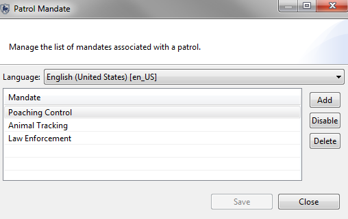
Los Tipos de Patrullaje son los tipos de transporte utilizados por los equipos de patrullaje en el Área de Conservación. Las opciones de base para los Tipos de Patrullaje son Aire, Tierra y Mar. Cada una de estas opciones puede ser desactivado si no se están usando por la Área de Conservación. Las opciones de transporte son los tipos específicos de transporte para las opciones de base de aire, tierra y mar.
Añadir: Añade nuevas opciones/tipos de transporte a la lista.
Desactivar/Activar: La opción/el tipo de transporte puede ser deshabilitado si no está actualmente en uso, pero todavía tiene patrullajes asociados. Más tarde se puede habilitar para su uso en el futuro.
Eliminar: Elimina de forma permanente la opción/tipo de la lista. Esto sólo es posible si no hay información de patrullaje que se asocia con la opción o el tipo de patrullaje.
Nota: El idioma se configura antes de entrar a las opciones de transporte.
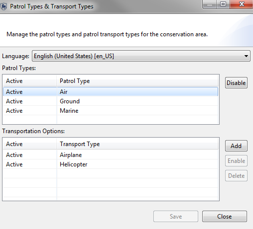
Equipos de patrullaje, sus mandatos y descripciones están introducidos y manejados desde esta pantalla. Si no se han creado mandatos, no habrá opción de seleccionarlos de la lista. Este proceso no es un requisito durante la inicialización de la información de patrullaje para el área de conservación.
Equipo: El nombre del equipo de patrullaje.
Mandato: El mandato del equipo de patrullaje seleccionado de la lista de mandatos creados anteriormente.
Descripción: La descripción del equipo de patrullaje.
Añadir: Añade nuevos equipos de patrullaje a la lista.
Desactivar/Activar: Un patrullaje se puede desactivar si no está actualmente en uso, pero todavía tiene patrullajes asociados. Se puede habilitar más adelante para su uso en el futuro.
Eliminar: Elimina de forma permanente el equipo de la lista. Esta acción sólo es posible si no hay información de patrullaje asociada con el equipo.
Nota: El idioma se configura antes de entrar a los equipos de patrullaje.
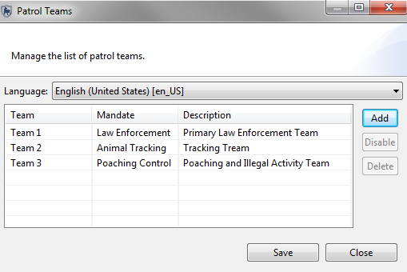
Patrullajes y sus observaciones pueden ser introducidos por un usuario SMART con los permisos adecuados, después de que el área de conservación y las propiedades de patrullaje han sido completadas.
La creación de un patrullaje nuevo comienza con la selección de la opción "Crear nuevo patrullaje" en el menú de patrullaje al iniciar el asistente de ingreso de patrullaje. El asistente para ingresar patrullajes en SMART está diseñado para guiar al usuario a través del proceso de ingresar las características del patrullaje.
Pasos para Ventana de Ingreso de Patrullaje
Asistente de Patrullajes de Múltiples Tramos
Un patrullaje de varios tramos sucede cuando un grupo de patrullaje se divide en dos o más grupos o si el patrullaje cambia de tipos de transporte o líder. Un patrullaje puede dividirse en dos grupos, cada uno con su propio líder y tipo de transporte. Si un patrullaje requiere una mayor división entonces uno de los sub-grupos requerirá una división más. Grupos divididos pueden combinarse en un solo grupo, o pueden completar el patrullaje en grupos separados.
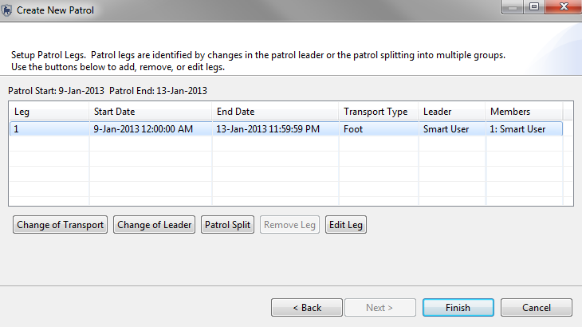
Las coordenadas del punto del patrullaje se ingresan principalmente a SMART a través de procesos automatizados que extraen los puntos directamente desde una unidad GPS o mediante la importación de archivos GPX estandarizados. El asistente de importación SMART tiene opciones para asignar automáticamente los puntos del patrullaje al día correcto basado en la marca de tiempo en el GPS o puede que el usuario asigne manualmente los puntos a un día específico si se requiere. Existe una opción manual para ingresar las coordenadas del punto si la información de ubicación no fue capturada por un GPS.

Hora de inicio - La hora de inicio del patrullaje para ese día o ese tramo.
Hora de finalización - La hora de finalización del patrullaje para ese día o ese tramo.
Minutos de Descanso - Número de minutos de descanso durante el patrullaje.
Distancia recorrida (km) - Distancia calculada de viaje durante el día de patrullaje o el tramo (en base a información del trayecto del GPS o calculado por los puntos disponibles).
Establecer Trayecto - Abre el asistente de importación de trayectos GPS.
Ver Trayectos - Abre una ventana para ver las coordenadas y marcas de tiempo de los trayectos.
Importar puntos del patrullaje - Abre el asistente de puntos GPS.
Campos de la Tabla de Puntos
ID de punto en el patrullaje - Identificación de un punto asignado por el GPS o por SMART si se ha introducido de forma manual.
Longitud - Coordenada de longitud capturada por el GPS o ingresado por el usuario de SMART.
Latitud - Coordenadas de latitud capturadas por el GPS o ingresada por el usuario de SMART.
Tiempo - Marca de tiempo capturados por el GPS
Observación - Al hacer clic en el icono de la celda de observación se iniciará el asistente Observación del Punto
Comentario - Comentarios ingresados en el GPS son presentadas de forma automática en este campo. Comentarios ingresados manualmente también son posibles.
Adjuntos - Archivos adjuntos son añadidos a los puntos haciendo clic en el icono en esta celda para abrir la ventana de archivos adjuntos.
El primer paso después de seleccionar el vínculo Importar puntos es seleccionar el método de importación.
Importación de GPS - Seleccione este método si el GPS no funciona como un aparato de almacenamiento masivo.
Importación GPX - Seleccione este método si el GPS funciona como aparato de almacenamiento masivo.
Opciones de importación GPS
Tipo de GPS - Seleccione el aparato de GPS y el protocolo.
Importar todo (y asignar a día correcto) - SMART utilizará la marca de fecha y hora del GPS y asignará los puntos obtenidos a la fecha correcta.
Importación sólo waypoints para <fecha> - SMART importará sólo los puntos para la fecha seleccionada.
Seleccione los puntos para la importación de <fecha> - El usuario SMART seleccionará y asignará puntos a la fecha seleccionada.
Seleccione los puntos para importar

Se pueden seleccionar los puntos individualmente o con la opción Seleccionar todo.
Opciones de importación GPX
Añadir - Abre una ventana para permitir la selección de los archivos GPX. Los archivos se pueden almacenar en el GPS o en un equipo independiente.
Eliminar - Elimina archivos GPX seleccionados del asistente.
Importar todo (y asignar al día correcto) - SMART utilizará la marca de fecha y hora del GPS y asignará los puntos obtenidos a la fecha correcta.
Importación de puntos sólo para <fecha> - SMART importará sólo los puntos para la fecha seleccionada.
Seleccione cuales puntos importar para la <fecha> - El usuario SMART seleccionará y asignará puntos a la fecha seleccionada.
Ingreso manual de puntos
SMART permite el ingreso manual de información de puntos.
Añadir Puntos - Ingreso manual de información de puntos.
Elimina Punto (s) - Elimina puntos seleccionado (s).
Mover Punto (s) - reasigna los puntos seleccionado (s) para otro día.
Notas especiales sobre la importación de Puntos GPS para Patrullajes de Varios Tramos
Si la información de trayectos ha sido capturado por el GPS, el proceso de importar la información de los trayectos es el mismo que el proceso para los puntos, excepto que el proceso se inicia seleccionando Configurar Trayecto ...
Nota: Los trayectos pueden ser creados a partir de los puntos disponibles si no se ha colectado información de trayectos por el GPS.
Después que un patrullaje se ha creado y los puntos se han importado, el siguiente paso es ingresar las observaciones registradas durante el patrullaje.
El proceso comienza haciendo clic en el botón de la columna Observación. Este botón iniciará el asistente para el ingreso de Observaciones de Puntos.
Después que un patrullaje se ha creado y contiene información de puntos y/ o trayectos, el usuario de SMART puede usar la pestaña de mapa (abajo a la derecha) para ver la la información de trayectos y puntos.
Navegación del mapa será igual aquí que con la ventana Perspectiva de Mapas. La única adición es el
icono de información [  ]. Al seleccionar esta herramienta y luego haciendo clic encima de
un elemento del mapa, SMART abrirá una ventana que muestra la información de atributos
asociada con esa característica.
]. Al seleccionar esta herramienta y luego haciendo clic encima de
un elemento del mapa, SMART abrirá una ventana que muestra la información de atributos
asociada con esa característica.
El ingreso de datos en SMART está diseñado para ser distribuible. Varios usuarios de SMART pueden ingresar patrullajes y las observaciones correspondientes a ellos en varias computadoras y exportar el patrullaje después de haber introducido la información. El patrullaje es exportado en una estructura XML y contiene archivos adjuntos (si los hay). Este paquete XML puede ser importado después a un equipo diferente.

Buscar - Se usa para seleccionar la ubicación de los patrullajes exportados.
Incluir archivos adjuntos - Si se selecciona, las exportaciones de patrullaje incluirán archivos adjuntos asociados a los puntos.
Filtro de Patrullaje - Por defecto, sólo los últimos 20 patrullajes se muestran, en orden inverso. Si se necesitan más patrullajes, haz clic en el enlace "aquí" para mostrar todos los patrullajes.
Seleccionar todo - Los patrullajes pueden seleccionarse de forma individual, o todos a la vez, haciendo clic en Seleccionar todo.
De-Seleccionar todo - Este botón de-selecciona todos los patrullajes previamente seleccionados.
Exportar - Ejecuta el proceso de exportación de patrullaje.
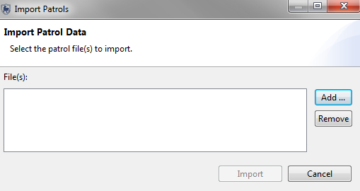
Buscar - Importa un archivo de patrullaje singular.
Añadir - Permite la selección de múltiples archivos de patrullaje.
Eliminar - Elimina archivos de patrullaje no deseados del proceso de importación.
Importar - Ejecuta el proceso de importación de patrullaje.
La perspectiva de consulta es donde la mayoría de las capacidades analíticas de SMART se encuentran. Las consultas se pueden crear, ejecutar, guardar y exportar/importar. Los resultados de las consultas se pueden ver directamente desde la Perspectiva de Consultas o exportadas para su uso en otras aplicaciones de software.
La perspectiva de consulta SMART comparte el mismo marco básico para todos los tipos de consultas. Los componentes individuales de los cuatro tipos de consulta variarán dependiendo en cual la consulta se elija.
Nota: Las consultas de Patrullaje y Puntos comparten todos los mismos componentes entre si y muchos de los mismos componentes de Consultas de Resúmenes y Espaciales.
Una consulta SMART es una expresión lógica utilizada para filtrar los registros en la base de datos. SMART tiene cuatro tipos de consultas (puntos de patrullajest, patrullaje, resumen y espacial).
Muestra los registros de observación que se seleccionaron utilizando filtros, sin resumir (totales, etc.). Las consultas se pueden ver en tablas o en un mapa.
Ejemplo: Mostrar todos los puntos del Patrullaje ID 1021
| Patrullaje ID | Tramo de Patrullaje | Fecha de Patrullaje | Hora | Tipo de Observación |
| 1021 | 1 | 03 de noviembre 2011 | 9:34 | Actividad Humana |
| 1021 | 1 | 03 de noviembre 2011 | 10:23 | Animales |
Muestra los patrullajes seleccionados usando los filtros de búsqueda. Los Puntos de Patrullaje no se muestran en los resultados. Las Consultas pueden ser visualizadas en tablas o en un mapa.
Ejemplo: Mostrar todos los patrullajes en el cual se encontró un cádaver de elefante.
| ID de Patrullaje | Tramo de Patrullaje | Fecha de Patrullaje | Hora |
| 101 | 1 | 03 de noviembre 2011 | 16:34 |
| 103 | 1 | 07 de noviembre 2011 | 10:23 |
Un resumen resume los datos brutos y permite agruparlos en diferentes categorías. Los elementos que se pueden resumir son valores como el número total de patrullajes, la distancia total recorrida, el número total de observaciones de trampas, etc. Las agrupaciones son categorías como los sectores de gestión, los tipos de patrullaje, los mandatos de patrullaje, estaciones, equipos, etc. Resúmenes sólo se pueden ver en forma de tablas. Resultados sólo se visualizan en tablas.
Ejemplo: Mostrar el número total de trampas observadas en cada sector de gestión para cada uno de los últimos 6 meses.
| Enero | Febrero | Marzo | Abril | Mayo | Junio | |
| N º de Trampas | N º de Trampas | N º de Trampas | N º de Trampas | N º de Trampas | N º de Trampas | |
| Sector A | 7 | 6 | 3 | |||
|---|---|---|---|---|---|---|
| Sector B | 15 | 10 | 2 | 19 | 5 | 3 |
Los resultados se muestran en un formato de cuadrícula especificado por el usuario (raster) con resultados agregados basados en el tamaño de la cuadrícula definida. Los resultados se muestran en tablas o en un mapa.
Ejemplo: Mostrar el número de patrullas en cada celda cuadrículada
| ID de celda X | ID de celda Y | Valor |
| -12358 | 4839 | 4 |
| -12356 | 4838 | 2 |
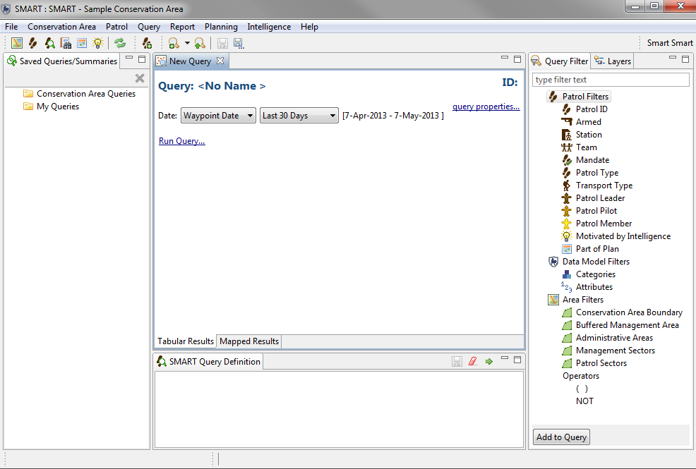
| Icono o enlace | Descripción |
| Filtra la fecha de la consulta. | |
| Se utiliza para cambiar el nombre de la consulta. | |
| Cambia el nombre de la consulta. Filtra los campos devueltos en los resultados de la consulta. | |
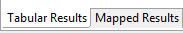 |
Cambia entre los resultados en tablas y resultados mapeados. |
 |
Ubicación de las consultas y los resúmenes guardados. Por defecto hay dos
carpetas (Consultas de Área de Conservación y Mis Consultas).
Cualquier cuenta de usuario se puede guardar en Mis Consultas, pero los elementos guardados son sólo accesibles a la cuenta del usuario que los creó. Sólo las cuentas de administrador y gerente pueden guardar dentro de la carpeta Consultas de Área de Conservación. |
| Se utiliza para filtrar los resultados basádos en la información de patrullaje. | |
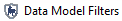 |
Se utiliza para filtrar los resultados basados en las categorías y los atributos del modelo de datos. |
| Se utiliza para filtrar los resultados en función de los límites espaciales del Área de Conservación. | |
 |
Los operadores de NO y los brackets () se utilizan para cambiar la lógica de la consulta. |
| Ejecuta la consulta. | |
| Borra la consulta. | |
| Guarda la consulta. | |
| Pestaña contiene los componentes utilizados para construir la consulta o el resumen. | |
| Pestaña contiene las capas del mapa. | |
| Ventana donde se construye, borra, ejecuta, y guarda la consulta o el resumen. |
La ruta de trabajo básica para crear búsquedas es la misma para todos los tipos de búsquedas, pero los detalles varían dependiendo del tipo de búsqueda siendo construida.
Tipos de filtro
Patrullaje - características utilizadas cuando se define el patrullaje (estación, equipo, miembros, etc ...)
Modelo de Datos - componentes del modelo de datos del Área de Conservación. Categorías o atributos del modelo de datos o atributos pueden ser seleccionados.
Área - permite el filtrado espacial del patrullaje basado en los cinco límites predeterminados del Área de Conservación.
Operadores - se utilizan para alterar la lógica de la búsqueda permitiendo a los usuarios SMART crear consultas más complejas.
Los operadores incluyen:
| Definición de consulta | Descripción | Filtros Usados |
| Todos los patrullajes u observaciones dirigidas por el Equipo 2 que salió de la estación central. | Patrullaje | |
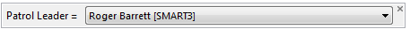 |
Todos los patrullajes u observaciones en los cuales Roger Barrett fue el líder de patrullaje. | Patrullaje |
| Todos los patrullajes u observaciones registrados en la categoría (o sub-categorías) de Biológico - Uso de Recursos - Tala y Madera | Modelo de datos - Categorías | |
| Todas las Amenazas en la categoría Biológico - Uso de Recursos menos Recolección de Plantas Terrestres | Modelo de datos - Categorías | |
| Selecciona todos los patrullajes u observaciones en las cuales se encontró un tigre de Sumatra independientemente de la categoría en la cual se registró. | Modelo de Datos - Atributo (global) | |
| Selecciona todos los patrullajes u observaciones que confiscaron en las cuales se confiscó un Tigre de Sumatra muerto dentro de la categoría padre Caza y Recolección de Animales Terrestres | Modelo de Datos - Atributo (categoría específica) | |
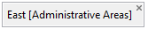 |
Selecciona todos los patrullajes u observaciones que sucedierón en el Área Administrativa Este | Área |
| Todas los patrullajes u observaciones en las cuales se encontró una Amenaza de Caza y Recolección y ocurrieron en el Área Administrativa Oriente. | Modelo de datos - categoría y área |
|
 |
Todos los patrullajes u observaciones hechas por el equipo 2 en las cuales se encuentran huellas de Tigres de Sumatra en las áreas administrativas Este o Oeste | Modelo de Datos - Atributo (categoría específica) y Patrullaje y Área. |
Introducción a la Consulta de Resumen

| Icono o enlace | Descripción |
| Filtra la fecha de la consulta. | |
| Se utiliza para cambiar el nombre de la consulta. | |
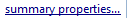 |
Cambia el nombre de la consulta. Filtra los campos devueltos en los resultados de la búsqueda. |
|
Ubicación de las búsquedas y los resúmenes guardados. Por defecto hay dos
carpetas (Búsquedas de Área de Conservación y Mis Búsquedas).
Cualquier cuenta de usuario se puede guardar en Mis Búsquedas, pero los elementos guardados sólo son accesibles a la cuenta del usuario quien los creó. Sólo las cuentas de Administrador y Gerente pueden guardar dentro de la carpeta Búsquedas de Área de Conservación. |
| Filtra la lista de búsquedas disponibles. La construcción de los filtros es lo mismo que la construcción de una búsqueda de observación o patrullaje. | |
| Ejecuta la búsqueda. | |
| Guarda la búsqueda. | |
| Borra la búsqueda. | |
| Abre las ventanas "Pestaña para Agrupar por y Valores" y "Pestaña Filtro". | |
| Opciones para Agrupar Por se utilizan para agregar los resultados del resumen de valores. | |
| Valores de resumen disponibles para crear el resumen. | |
| Agrupar Por serán colocados verticalmente en la tabla como el encabezado para cada fila. | |
| Agrupar Por serán colocadas horizontalmente en la tabla, como el encabezado para cada columna. | |
| Valores de Patrullaje o Modelo de datos utilizados para construir el resumen. |
Opciones para Agrupar Por
Agrupar por Patrullaje - agregaciones de valores basados en características de patrullaje
Agrupar por Modelo de Datos - agregaciones de valores basados en registros del modelo de datos
Opciones de Valor
Valores de Patrullaje - ingresados para averiguar los valores asociados con patrullajes
Valores del Modelo de Datos - ingresados para averiguar los valores asociados con las observaciones del modelo de datos
Resúmenes de SMART puede ser formateados de varias maneras utilizando las ventanas de Encabezado de Fila o Encabezado de Columna.
Encabezados de fila - Los valores insertados en Encabezados de Fila devolverá los resultados con los registros agrupados o agregadas apareciendo en la columna a la izquierda resultando en una tabla con múltiples filas.
Encabezados de columna - Los valores insertados en encabezados de columna obtendrá resultados con los registros agrupados o agregados apareciendo en la fila superior resultando en una tabla con varias columnas.
Valor X - Ubicación donde se colocan los valores para el resumen
Nota: más que un ingreso se puede introducir en las ventanas Valores o Agrupar Por pero no todas las combinaciones están permitidas si rompen las agrupaciones lógicas.
Resúmenes de muestra
El resumen que sigue es un resumen básico para contar el número de Amenazas Observadas Agrupadas Por Tipo de Patrullaje.
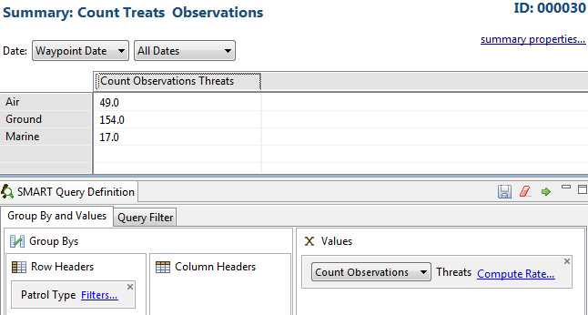
La búsqueda se ha modificado con el Número de Amenazas añadido una segunda vez, pero con la opción de Cuenta de Incidentes elegida.
Esto le dará el número de observaciones y el número de incidentes (Múltiples observaciones en un waypoint).
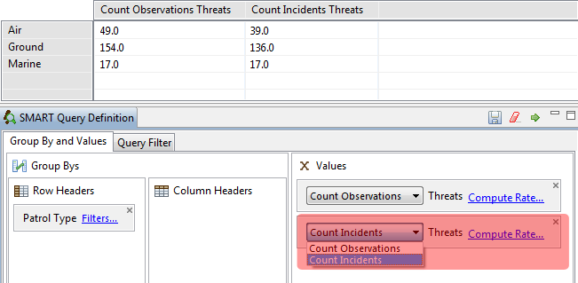
Este ejemplo muestra algunos datos básicos sobre el patrullaje saliendo de las estaciones de la Área de Conservación. Los valores de X son número de patrullajes, Días, Noches, Distancia, etc. y se seleccionan a partir de la sección Valores de Patrullaje.
La lista de estaciones se rellena al seleccionar la opción Agrupar por - Patrullajes Agrupar Por - Estación.

Este ejemplo es del mismo resumen pero sin el Agrupar Por Estaciones.

Ágregados
Una vez que un atributo de número del modelo de datos tiene sus agregados inicializados, pueden ser utilizados en los resúmenes para dar Min, Max, Suma y Promedio como Resumenes para ese atributo particular.
En el siguiente ejemplo, la búsqueda es para mostrar la suma del número de armas confiscadas y vistas.
Nota: Si no hay Agregados disponibles al construir un Resumen, el modelo de datos se ha configurado para no permitirlos. Si es necesario, se debe poner en contacto con el administrador SMART para inicializar los Agregados.

Calcular Tasa/Tasa de Encuentro
SMART puede proveer Tasas de Encuentro para las Opciones de Valor X. Los valores de base se calculan en contra de la Tasa de Encuentro para dar una cuenta de cuantas Observaciones / Incidentes por X...
Estas tasas se acceden a través del enlace "Calcular Tasa." Si múltiples Tasas de Encuentro se requieren en el resumen, entonces el elemento valor tendrá que ser añadido cuantas veces sea necesario.
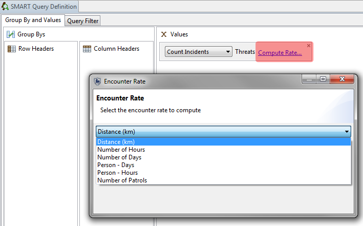
En el siguiente ejemplo, la Cuenta de Amenazas (Incidentes) por Distancia, Horas de Persona y Patrullajes son resumidos por Equipos. Los resultados de este resumen muestran que Equipo 2 se encuentra con casi 10 veces amenazas por distancia viajado más que el Equipo 1 y aproximadamente 2,5 veces más observaciones por kilómetro que el Equipo 3.

La Búsqueda de Resumen Cuadriculada SMART resume la búsqueda en una cuadrícula definida por el usuario y emite los resultados en forma de una tabla o en un mapa raster. El mapa raster de resultados muestra un mapa de calor de los resultados de resumen que puede ser rápidamente interpretado por los usuarios para ver dónde se encuentran los problemas. Los valores de X para el Resumen cuadriculado se construyen de la misma manera que con las búsquedas de resumen con la diferencia principal de que no hay Opciones de Agrupar Por disponibles.
| Icono o enlace | Descripción |
| Filtra la fecha de la consulta. | |
| Se utiliza para cambiar el nombre de la consulta. | |
| Cambia el nombre de la consulta. Filtra los campos devueltos en los resultados de la consulta. | |
|
Ubicación de las consultas y los resúmenes guardados. Por defecto hay dos
carpetas (Consultas de Área de Conservación y Mis Consultas).
Cualquier cuenta de usuario puede guardar dentro de la carpeta Mis Consultas, pero los elementos guardados sólo son disponibles a la cuenta del usuario que los creó. Sólo las cuentas de Aministrador y Gerente pueden guardar dentro de la carpeta de Consultas de Área de Conservación. |
| Ejecuta la consulta. | |
| Guarda la consulta. | |
| Borra la consulta. | |
| Abre las ventanas "Pestaña Agrupar por y Valores" y "Pestaña Filtro". | |
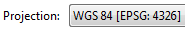 |
Opción de elegir las proyecciones disponibles para construir la cuadricula. |
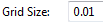 |
Ajusta el tamaño de la cuadrícula sobre la base de las unidades de mapeo de la proyección. |
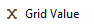 |
El valor del Resumen espacial. |
El siguiente ejemplo es de un simple resumen espacial para mostrar las amenazas observadas basadas en una cuadrícula de 0.01 grado. En una consulta espacial siempre hay una visualización base de donde fueron los patrullajes.
A estos ingresos se les da un valor de 0. Cualquier valor mayor de 0 indica la presencia del valor de cuadrícula seleccionado.

Filtros espacial
Filtros adicionales se pueden aplicar a las consultas espaciales de la misma manera como con otros tipos de consultas. Seleccionando la pestaña de filtro abrirá el marco para la adición de filtros adicionales a la consulta.
Nota: Si la Tasa de Encuentros se aplica a los valores de cuadricula X, un filtro adicional (filtro de tasa) aparecerá en la pestaña de filtro. Este filtro adicional puede permitir al usuario ajustar los parámetros de filtro para producir un filtro multicapa que se aplica a los elementos de valores de cuadrícula X.

Los informes SMART son altamente configurables y permiten una amplia gama de informe estándarizado. La información en los informes puede ser dinámicamente generada con base en los resultados de las consultas y los resúmenes SMART. Un componente principal de SMART es su capacidad de mapeo, los informes SMART permiten que los mapas sean incluidos y personalizados para adaptarse al informe. Informes SMART contienen muchos elementos de reportaje comunes (tablas, cuadros/gráficos, imágenes, etc ..), así como otros elementos (mapas y los resultados de consultas dinámicas) que resulta en un poderoso paquete de reportaje.
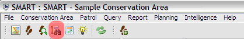
Barra de Herramientas de Informe
La barra de herramientas de informe contiene iconos para crear, editar, ejecutar, exportar y eliminar informes.
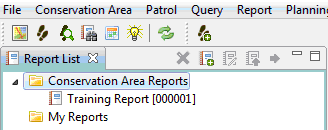
Iconos en la Barra de Herramientas de Informe
| Elimina el(los) informe(s) seleccionado(s) | |
| Crea un nuevo informe | |
| Edita el(los) informe(s) seleccionado(s) | |
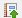 |
Ejecuta y exporta el(los) informe(s) seleccionado(s) |
| Ejecuta el(los) informe(s) seleccionado(s) |
Editor de Informes
El Editor de Informes consiste de algunos componentes básicos, que contienen su propia funcionalidad y tienen su propio propósito. Cuando se construyen informes básicos a intermedios, es probable que haya muchas funciones del informe SMART que no se utilizarán.

Ventana de Diseño
La Ventana de Diseño es donde se organizan los componentes del informe. Esta ventana da una vista previa de cómo será el informe final ya que los informes son generalmente basados en datos dínamicos. La ventana permite que se pueda cambiar, mover, y añadir los objetos de informe y que se puedan personalizar en cuanto al contenido, el tamaño y el estilo.
Las pestañas de Diseñol y Página Maestra a la base de la pantalla son las dos pestañas que la mayoría de los usuarios estarán usando. Se recomienda altamente no hacer cambios en las pestañas Script o Fuente XML, al menos que sea un usuario avanzado que entiende los riesgos de editar directamente el código utilizado para generar el informe.
Editor de Propiedades
Esta ventana se utiliza para editar las propiedades de los objetos que han sido cargados en la ventana de diseño. Las opciones de editor de propiedades cambiarán si cambias entre las pestañas de Diseño y Página Maestra.
Propiedades del informe (Pestaña Página Maestra)
Se utiliza para especificar las propiedades generales de la página principal del informe.

Esquema
El esquema se utiliza para organizar los objetos que se utilizan para crear y organizar su informe. Objetos y elementos se importan al esquema, y permite un fácil acceso a estos componentes cuando los informes están diseñados en la Ventana de Diseño. Si un objeto es usado y común a través de muchos informes (logos, títulos, ...), entonces estos objetos se pueden exportar a la biblioteca de recursos compartidos. Esto se hace con un clic derecho sobre el objeto y seleccionando "Exportar a la biblioteca ..."
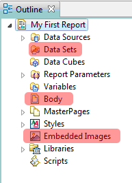
Explorador de Recursos
El Explorador de Recursos es donde los Recursos Compartidos de la biblioteca pueden ser accesados. Aquí es donde usted puede guardar elementos de informe comunes que se utilizan en varios informes, por ejemplo, logos. Si es probable que se utilize un objeto para la mayoría, si no todos, los informes, entonces lo mejor es compartir el objeto en la biblioteca de recursos compartidos. Cualquier creación y edición de informes puede acceder inmediatamente a estos objetos y no es necesario importar o vincular a ninguna de ellas.
Nota: Se recomienda limitar los objetos de la biblioteca de recursos compartidos a objetos que serán utilizados por la mayoría si no todos los informes. Agregando demasiados objetos a la biblioteca impacta negativamente el rendimiento del marco del informe.

Elementos de informe
Los elementos de informe contienen muchos de los objetos que se utilizan para crear el informe. Estos objetos se seleccionan y se insertan en la ventana de editor de informes para construir el informe deseado.

El modelo de datos de SMART es la fundación del ingreso de datos, el análisis y la presentación de informes. Definir el modelo de datos para satisfacer las necesidades de un área de conservación es crucial para asegurar que el ingreso de datos, el análisis y la presentación de informes trabajen juntos para proporcionar la información necesaria para gestionar adecuadamente los patrullajes. El software SMART viene con un modelo de datos predeterminado que se puede personalizar por un Administrador SMART para satisfacer plenamente las necesidades del área de conservación.
La estructura del modelo de datos de SMART se basa en una estructura de árbol, que consiste en
nodos (Categorías) y una serie de 'hojas' (atributos) que pueden
ser asociados a cualquier número de categorías del árbol. 
Las categorías pueden tener o no tener atributos, y pueden ser padre a otras categorías o un niño de los demás.
SMART es compatible con los tipos de atributos: numérico, texto, lista, árbol y Boolean. El uso de los tipos de atributos dependerá de la naturaleza de la información de observación recolectada en el campo.
Ejemplos y usos recomendados de los tipos de atributos son:
| Icono | Tipo | DESCRIPCIÓN |
| Numérico | Anchos, largos, cantidades, números de animales, personas u objetos | |
| Lista | Los nombres de los elementos en donda la lista se conoce y no es demasiada larga | |
| Texto | Los nombres específicos que no pueden ser cargados de antemano a una lista | |
| Árbol | Una colección de atributos que se pueden organizar en una estructura jerárquica o en un formato lógico, como especies de animales | |
| Boolean | Cualquier situación que se pueda responder con un Sí o un No |
Un atributo no puede existir por sí mismo. Se trata de una extensión de una categoría y debe estar asociado con una categoría. Una categoría en contraste no necesariamente requiere atributos.
Los atributos pueden ser asociados con una sola categoría o con múltiples categorías.
Categorías, atributos o valores dentro de todos los atributos pueden ser eliminados del modelo de datos, o deshabilitados.
Eliminación - elimina completamente la función de los modelos de datos. Esto sólo puede hacerse si no hay dependencias. Una dependencia puede ser una categoría hija, un atributo, una observación registrada o una consulta/resumen. Si no existen dependencias, la función se puede eliminar por completo de los modelos de datos.
Deshabilitar - Si existen dependencias o el administrador no desea eliminar por completo la función, ésta se puede deshabilitar. Deshabilitación elimina la capacidad de registrar observaciones basadas en la característica deshabilitada, pero sí preserva la capacidad de realizar análisis sobre la función. Deshabilitando/Habilitando categorías es un proceso mucho más fácil, ya que no requiere que todos las dependencias sean deshabilitadas antes de proceder con la categoría a nivel superior. También permite la reintroducción en caso que se requiera. Una categoría o un atributo deshabilitado aparecerá gris hasta que se vuelva a habilitar.
Categorías y atributos pueden cambiarse de posición al ser arrastrados a una nueva posición dentro de ese nivel.
Atributos de árboles pueden ser pre-definidos fuera de SMART en un formato XML e importados al modelo de datos utilizando la opción Importar del atributo cuando se crea un nuevo atributo. El uso más común de esta característica sería cuando se crea una nueva área de conservación y se define el modelo de datos para el área.
El modelo de datos predeterminado no contiene una lista de especies predefinido. La opción Importar permite una importación de una lista de especies personalizada que trae sólo las especies deseadas al modelo de datos del Área de Conservación. Otros atributos de árbol pueden ser importados si el XML está bien construido.
Cuando se crea un atributo o categoría, una clave única es automáticamente generada. Las claves generadas son por lo general el nombre común sin espacios ni otros caracteres. Si un nombre común es el mismo que un nombre previo, SMART añadirá un número al final del nombre común para que sea único. Si el nombre común comienza con un número, SMART eliminará el/los número(s) de manera que la clave comience con un carácter alfabético.
Nota: Se recomienda dejar las llaves sin editar a menos que usted entienda completamente lo que podría suceder si las llaves se cambian.
Análisis entre las áreas de conservación se lleva a cabo dentro del Marco de análisis Trans-Áreas de Conservación. Este marco permite realizar búsquedas entre las áreas de conservación almacenadas dentro de una instalación de SMART. Análisis Trans-Áreas de Conservación requiere que más que una Área de Conservación esté cargada dentro de una instalación de SMART.
1. Más de una Área de Conservación sea cargada en SMART
2. El nombre de usuario y passsword sea común a las Áreas de Conservación disponibles
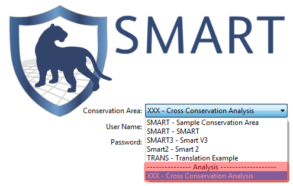
Para iniciar sesión, el usuario selecciona "XXX - Análisis Trans-Áreas de Conservación y es requirido ingresar el nombre de usuario y contraseña que es común a las Áreas de Conservación.
Después de ingresar a SMART, abra la lista de Áreas de Conservación disponibles para el análisis. Esta pantalla permite que las áreas de conservación sean incluidas en el análisis. El usuario SMART puede seleccionar qué áreas de conservación incluir haciendo clic al enlace "Modificar ...". Esto abrirá una ventana donde el usuario puede seleccionar las Áreas de Conservación específicas para el análisis. Después que se seleccionan las áreas de conservación, SMART valida los modelos de datos seleccionados y busca componentes en comun que estarán disponibles para su uso en consultas o informes.
| Icono | DESCRIPCIÓN |
| Perspectiva de Consulta | |
| Perspectiva de informe | |
| Guardar consulta | |
| Guardar consulta como | |
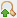 |
Exportar consulta |
| Crear consulta | |
| Restaurar ventanas |
Nota: Los iconos utilizados en el análisis trans-áreas de conservación son los mismos iconos utilizados por el resto del programa.
Los filtros de consulta (patrullaje y modelo de datos) disponibles para su uso son los componentes que son comunes a todos los modelos de datos. SMART busca las llaves de modelos de datos y la información de patrullaje única para extraer los elementos comunes a todos las Áreas de Conservación seleccionadas. Si una clave de modelo de datos ha sido alterada, el software no será capaz de búscar en contra de otras áreas a menos que todas las demás claves han sido actualizadas de manera parecida. Preservar las llaves en un modelo de datos estandarizado permite el análisis trans-áreas de conservación. Al alterar claves, quitas esta habilidad.
Una consulta trans-áreas de conservación se construye utilizando la misma ruta de trabajo como una consulta estándar.
Al igual que con los informes SMART estándar, informes Trans-Áreas de Conservación están vinculados a las consultas guardadas. Cualquier informe trans-áreas de conservación que desean vincularse a una consulta debe primero crear consultas específicas dentro del marco de análisis trans-áreas de conservación. Una vez que las consultas se han guardado, ellos estarán disponibles para su uso en los informes del análisis trans-áreas de conservación.
Nota: Los conjuntos de datos del informe vinculados a las tablas no necesitan ningún trabajo adicional para acceder la información.
Un Informe trans-área de conservación está construido utilizando la misma ruta de trabajo que un informe estándar.